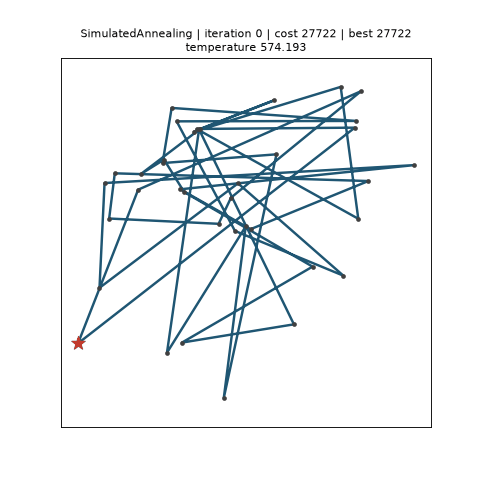
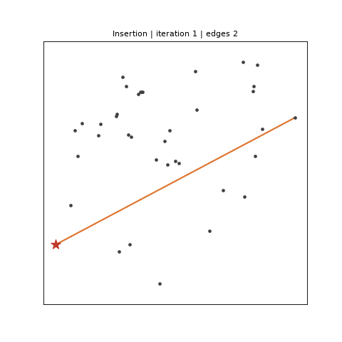
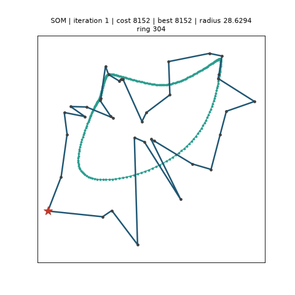

Live visualisation¶
Route optimisation is a spatial problem, and a solver's progress is easiest to judge by
eye: are the crossings disappearing, is the best tour still changing, did the annealer
freeze too early? skroute.viz draws the answer — a fitted solution as a static picture,
a running solver live, and a finished run again, at time-lapse speed — through
the fit(..., callback=) protocol every solver implements: the solver hands a
RouteEvent to your callback at the start of the search, after every outer iteration
(or every construction step) and at the end; LivePlot redraws
the attempt, the best tour and the structure being built on each event,
Recorder keeps them, with their clock, for later.

The pictures on this page are produced by the code of the repository:
examples/live_demo.py --record writes them (the exact commands are given under each).
Installing¶
The package is optional and nothing else in scikit-route imports it:
pip install "scikit-route[viz]" # matplotlib: plot_route, plot_history, LivePlot, Recorder
pip install "scikit-route[viz-map]" # + plotly: OpenStreetMap tiles, the plotly backend, sliders
import skroute.viz needs neither library — matplotlib and plotly are loaded at the
first call — and a missing one raises an ImportError naming the extra to install.
Coordinates are always (n, 2) arrays in the row order of the cost matrix. The
matplotlib tools draw column 0 as x and column 1 as y; the map tools expect
(latitude, longitude). For geographic data on plain axes pass coords[:, ::-1].
A picture of a solution¶
plot_route takes a fitted estimator and draws the nodes,
the depot (a star) and the closed route, one colour per trip; the coordinates come from
fit(..., coords=) or from its coords= argument. plot_history
draws history_, the best-so-far cost per outer iteration.
>>> import matplotlib
>>> matplotlib.use("Agg") # this page runs headless; drop the line on a desktop
>>> from skroute import IteratedLocalSearch
>>> from skroute.datasets import load_tsp
>>> from skroute.viz import plot_history, plot_route
>>> dj = load_tsp("dj38") # Djibouti, 38 cities, optimum 6656
>>> ils = IteratedLocalSearch(random_state=0).fit(dj.distance_matrix(), labels=dj.labels, coords=dj.coords)
>>> ax = plot_route(ils)
>>> len(ax.lines), len(ax.lines[0].get_xdata()) # one closed trip through the 38 cities
(1, 39)
>>> ax.get_title().startswith("IteratedLocalSearch | cost ")
True
>>> ax = plot_history(ils)
>>> len(ax.lines[0].get_ydata()) == ils.n_iter_
True
A multi-trip solution gets one line per trip. plot_route also accepts a route array
whose entries index the rows of coords (the tour_ or route_ of a solver fitted
without labels=; a repeated depot separates trips) and any RouteEvent:
>>> import numpy as np
>>> xy = np.array([[0.0, 0.0], [1.0, 0.0], [1.0, 1.0], [0.0, 1.0]])
>>> ax = plot_route([0, 1, 0, 2, 3], xy, labels=True) # two trips: 0-1-0 and 0-2-3-0
>>> len(ax.lines), [t.get_text() for t in ax.texts]
(2, ['0', '1', '2', '3'])
Watch a run live¶
LivePlot is a callable: pass it as the callback of fit.
On the "start" event it opens the figure; on every every-th "iteration" event it
redraws the current tour — the attempt the solver is working on — as a thin light
line and the best tour so far as a thick one, and puts the solver, the iteration,
both costs and one fact of the solver's own — its most informative scalar: the
temperature of an annealer, the tenure of a tabu search... — in the title; on "end" it
draws the final route with trip colours. It refreshes the window with plt.pause, so it
never blocks and never calls plt.show() — add that yourself after fit to keep the
window open.
>>> import matplotlib.pyplot as plt
>>> from skroute import SimulatedAnnealing
>>> from skroute.viz import LivePlot
>>> live = LivePlot(dj.coords, every=10) # redraw every tenth temperature level
>>> sa = SimulatedAnnealing(random_state=0).fit(
... dj.distance_matrix(), labels=dj.labels, callback=live
... ) # doctest: +SKIP
>>> plt.show() # doctest: +SKIP
show= picks what to draw during the run — "both" (the default), "best" alone, or
"current" alone — and trail=k keeps the last k attempts on screen, fading with age,
which gives a sense of where the search has been:
>>> attempts = LivePlot(dj.coords, every=5, show="current", trail=8) # the walker and its eight last steps
>>> attempts.show, attempts.trail
('current', 8)
A redraw costs a few milliseconds and a fast solver emits thousands of outer iterations
per second, so every= is the knob that keeps the search fast: SimulatedAnnealing runs
about 1 800 levels, IteratedLocalSearch up to n_iter kicks, TabuSearch n_iter
moves. Headless machines work too — on the Agg backend the lines are updated on every
kept iteration and the picture is rendered once, at "end", without being shown, which is
how this page and the test-suite run.
The figure stays open after fit (close it with plt.close(live.fig) when you watch many
runs in one script), and the same LivePlot can watch the next fit: a new "start" opens
a fresh figure. Under MultiStart(..., n_jobs=1) the inner solvers' events are forwarded,
so every restart is drawn from scratch in the same figure and its final route stays on
screen until the next restart begins.
examples/live_demo.py in the repository wraps this in a small command line:
python examples/live_demo.py --instance dj38 --solver IteratedLocalSearch
python examples/live_demo.py --instance barcelona --solver SimulatedAnnealing --every 10 --show current --trail 5
In a notebook¶
The same object works in Jupyter. LivePlot detects the kernel and picks the refresh
that fits the matplotlib backend:
%matplotlib inline(the default) — every redraw replaces the cell output throughIPython.display.display(fig, clear=True), and the figure is closed after the last one, so the cell ends with a single picture; keepevery=generous, each redraw renders a PNG.%matplotlib widget(ipympl) — the canvas is updated in place, the way a desktop window is.LivePlot(coords, backend="plotly")— a PlotlyFigureWidgetdisplayed once and updated in place;map=Trueputs it on OpenStreetMap tiles (and selects this backend by itself). Needsscikit-route[viz-map]andanywidget(Plotly's widget dependency); without a kernel the plotly backend builds a plainFigureand shows it once at"end".
>>> live = LivePlot(dj.coords, backend="plotly", every=5) # doctest: +SKIP
>>> IteratedLocalSearch(random_state=0).fit(dj.distance_matrix(), labels=dj.labels, callback=live) # doctest: +SKIP
Replay at time-lapse speed¶
Recorder draws nothing while the solver runs; it copies every
event (every= thins the iterations) together with the wall clock at which it arrived,
and replays the run afterwards — as fast or as slow as you like. The deterministic descent
below has three events; a real run has hundreds:
>>> from skroute import TwoOpt
>>> from skroute.viz import Recorder
>>> C = np.array([[0, 5, 9, 10], [5, 0, 4, 8], [9, 4, 0, 3], [10, 8, 3, 0]], dtype=float)
>>> rec = Recorder()
>>> two = TwoOpt().fit(C, coords=xy, callback=rec)
>>> [e.stage for e in rec.events], rec.n_frames
(['start', 'iteration', 'end'], 3)
>>> bool(np.all(np.diff(rec.timestamps) >= 0)) # the recorded clock, in seconds
True
Four ways to play it back:
replaydrives aLivePlotthrough the recorded events on the recorded clock divided byspeed:rec.replay(coords, speed=10)shows a 30-second run in three seconds, in a window or a notebook, as it looked live — the time a redraw takes is absorbed by the waits that follow, a gap over two seconds is cut down to two, and where nothing is shown before"end"(theAggbackend) the events are drawn back to back. It returns theLivePlot(solive.figholds the final picture);every=,show=,trail=and the otherLivePlotoptions pass through.animatebuilds the same frames as a matplotlibFuncAnimation:plt.show()plays it,IPython.display.HTML(anim.to_jshtml())embeds it in a notebook. Withspeed=(the default,1.0, is real time) every frame waits its recorded gap divided byspeed, clipped to[10, 2000]ms so a burst of iterations never flashes past and a slow step never freezes the replay (the floor is per frame: a run denser than a hundred kept frames per replayed second stretches rather than speeds up — thin it withRecorder(every=));fps=plays one frame per kept event at a fixed rate instead;interval=fixes the delay in milliseconds;hold=is the pause on the final picture before the loop restarts.rec.frame_delays(speed=...)returns the per-frame delays in milliseconds.savewrites the animation: a.gifthrough pillow, an.mp4(or any format ffmpeg writes) through matplotlib's ffmpeg writer — a clearRuntimeErrornames ffmpeg when it is missing.fps=is the frame rate of the file;speed=turns it into a time-lapse (each frame is held for its recorded gap divided byspeed, clipped to[10, 2000]ms likeframe_delaysand rounded to whole frames; a GIF folds repeated frames, so the time-lapse costs no extra bytes); the coordinates default to those of the fit.to_plotlygives a figure with one frame per kept event, Play/Pause buttons, a speed menu — 0.5x, 1x, 2x, 4x and 8x offps— and a slider over the iterations;map=Trueputs it on OpenStreetMap tiles.
>>> live = rec.replay(xy, speed=1e9) # no waiting at that speed: the three events, drawn in turn
>>> live.n_events, len(live.ax.lines) - 4 # after the four fixed artists: the final route, one trip
(3, 1)
>>> rec.frame_delays(speed=1e9).tolist() # microsecond gaps at 1e9x: clipped to the 10 ms floor
[10.0, 10.0, 10.0]
>>> anim = rec.animate(xy, speed=10) # doctest: +SKIP
>>> plt.show() # doctest: +SKIP
>>> rec.save("descent.gif", xy, fps=20, speed=10) # a 10x time-lapse GIF # doctest: +SKIP
>>> rec.save("descent.mp4", xy, fps=30) # ffmpeg on the PATH # doctest: +SKIP
>>> fig = rec.to_plotly(xy)
>>> [b.label for b in fig.layout.updatemenus[1].buttons]
['0.5x', '1x', '2x', '4x', '8x']
>>> len(fig.frames) == rec.n_frames and [b.label for b in fig.layout.updatemenus[0].buttons]
['Play', 'Pause']
>>> fig.write_html("descent.html") # doctest: +SKIP
Every frame is drawn the way LivePlot draws a live event — the attempt thin, the best
tour thick, the structures of the next two sections when the solver reports them, the
status line as the title, the final route with trip colours at "end" — and show=
chooses the tours ("both", "best", "current") in replay, animate, save and
to_plotly alike.
rec.events holds the copies (stage, iteration, cost, best_cost, tour,
best_tour, extra, timestamp, a reference to the problem, and the decoded route and
trips like a live event); rec.costs, rec.best_costs, rec.iterations and
rec.timestamps are the same facts as arrays. A frame is drawn for every kept event that
carries something to draw — a tour, a best tour, edges or a ring — so Recorder(every=30)
on an 1 800-level annealing gives about 60 frames. A recorder accumulates — handed to a
second fit it appends that run's events — so build one per run you want to replay; the
events of a MultiStart(n_jobs=1) (one "start"/"end" per restart, extra["restart"])
are plotted against the iteration counted across the restarts and labelled
restart:iteration on the slider.
The GIF at the top of this page is SimulatedAnnealing(init="random", random_state=0)
on Djibouti (dj38) recorded every 30 levels and saved at 80 dpi: a random tour of about
27 700 — four times the optimum 6656 — is untangled down to the optimum on the machine
that recorded it (another platform's exp may flip a Metropolis decision and land within
a percent of it); the annealer's attempts are the thin grey line, the best tour so far the
thick one:
python examples/live_demo.py --instance dj38 --solver SimulatedAnnealing --init random --every 30 \
--record docs/images/live_demo.gif --fps 12
See the route being built¶
Construction heuristics have no tour until they finish — and the interesting part is how
they get there. Under D31 they emit one "iteration" event per construction step with
tour=None, cost=nan, best_cost=nan and extra["edges"], the (label, label) pairs
of the partial structure they hold: the growing path of NearestNeighbour, the partial
cycle of Insertion after each insertion, the current trips of ClarkeWright after each
merge, the edge set of NRBS after each connection, the LP support of MILP after each
cut round. LivePlot and Recorder draw those edges as orange segments — with no tour to
show, the edges are the picture — and plot_route draws a single step (MILP also
reports edge_weights, the LP value of each support edge, so its support is drawn as the
weighted trails of the next section):

>>> from skroute.base import RouteEvent
>>> labels = dj.labels
>>> partial = [labels[0], labels[7], labels[3]] # the depot and the first two cities inserted
>>> cycle = list(zip(partial, partial[1:] + partial[:1])) # the closed partial cycle: three edges
>>> step = RouteEvent("Insertion", "iteration", 2, np.nan, np.nan, None, None, ils.problem_, {"edges": cycle})
>>> ax = plot_route(step)
>>> len(ax.lines), len(ax.lines[0].get_xdata()), ax.get_title() # one line, x0, x1, nan per edge
(1, 9, 'Insertion | 3 edges')
The GIF is Insertion() (farthest insertion) on dj38, one frame per inserted city — a
construction runs in a millisecond, so the file is written at a fixed frame rate rather
than as a time-lapse:
python examples/live_demo.py --instance dj38 --solver Insertion --record docs/images/construction_demo.gif --fps 8
Pheromone trails and the SOM ring¶
Two more extra keys describe structures that are not tours. AntColony reports
extra["edge_weights"], floats in [0, 1] parallel to extra["edges"] — the pheromone
strength of its 3n strongest trails after each iteration — which LivePlot and
Recorder draw under the tours as segments whose width and opacity grow with the weight,
so the strong trails stand out and the weak ones fade (Plotly, which cannot vary the width
along a trace, draws at one width the trails whose weight reaches a quarter of the
strongest one's — MILP's fractional edges included). SOM reports
extra["ring"], an (m, 2) array with the positions of its neurons in the units of
problem.coords after each epoch, drawn as a closed teal polyline with small markers —
the elastic ring closing on the cities while the decoded tour (thin) and the best epoch's
tour (thick) follow it:

python examples/live_demo.py --instance dj38 --solver SOM --set n_iter=20000 --record docs/images/som_demo.gif --fps 12
Viewers ignore keys they do not know, and an event without a key clears that drawing, so
a callback of your own can carry any structure through extra and still be drawn by the
three tools when it uses these names. The status line counts them: edges 37, ring 304.
Stop a run interactively¶
Any callback that returns True asks the solver to stop after its current outer
iteration; the fit then completes normally with stop_reason_ == "callback" and the
best tour found so far. LivePlot.stop() arms exactly that, for the run in progress (a
later fit with the same LivePlot starts unarmed).
Redraws happen on the thread that runs fit, and matplotlib is not thread-safe — the
reason MultiStart forwards the callback to its inner estimators only with n_jobs=1.
With a desktop window (macosx, Tk, Qt) fit therefore stays on the main thread and the
stop comes from the window itself: connect a key handler once the figure exists.
>>> live = LivePlot(dj.coords, every=5)
>>> def watch(event):
... stop = live(event)
... if event.stage == "start": # the figure exists now: any key press stops the run
... live.fig.canvas.mpl_connect("key_press_event", lambda key_event: live.stop())
... return stop
>>> sa = SimulatedAnnealing(random_state=0).fit(dj.distance_matrix(), labels=dj.labels, callback=watch) # doctest: +SKIP
>>> sa.stop_reason_ # doctest: +SKIP
'callback'
In a notebook with %matplotlib inline or backend="plotly" the redraws are
IPython.display calls rather than GUI drawing, so the fit can run in a worker thread
(the kernel stays responsive) and stop() comes from another cell:
>>> import threading
>>> live = LivePlot(dj.coords, every=5)
>>> sa = SimulatedAnnealing(random_state=0)
>>> worker = threading.Thread(
... target=sa.fit, args=(dj.distance_matrix(),), kwargs={"labels": dj.labels, "callback": live}
... )
>>> worker.start() # doctest: +SKIP
>>> live.stop() # from another cell, a few seconds later # doctest: +SKIP
>>> worker.join(); sa.stop_reason_ # doctest: +SKIP
'callback'
Maps¶
The five road-cost tables of skroute.datasets
carry (latitude, longitude) coordinates. plot_route_map
draws a solution on OpenStreetMap tiles with Plotly's Scattermap, and map=True does
the same for LivePlot, Recorder.replay (both then draw with the plotly backend) and
Recorder.to_plotly:
>>> from skroute.datasets import load_barcelona
>>> from skroute.viz import plot_route_map
>>> bcn = load_barcelona() # 19 places, costs in EUR, coords are (lat, lon)
>>> ils = IteratedLocalSearch(random_state=0).fit(bcn.cost, labels=bcn.labels, coords=bcn.coords)
>>> fig = plot_route_map(ils)
>>> [t.type for t in fig.data], fig.layout.map.style
(['scattermap', 'scattermap', 'scattermap'], 'open-street-map')
>>> fig.show() # doctest: +SKIP
>>> live = LivePlot(bcn.coords, backend="plotly", map=True, every=10) # doctest: +SKIP
>>> ax = plot_route(ils, bcn.coords[:, ::-1]) # the same route on plain axes: x = longitude
Multi-trip solutions get one Scattermap line per trip. The tiles are fetched by the
browser that renders the figure, so a saved HTML file needs a network connection to
show the map; the routes themselves are embedded.
What each solver reports in extra¶
Every event carries the same core fields — solver, stage, iteration, cost
(the objective of the current tour, nan when the solver has none), best_cost,
tour and best_tour (label-space open giant tours, depot first), problem, and the
decoded route and trips of the best tour — plus extra, a dict of solver-specific
facts. The keys of the "iteration" events (each solver's docstring is the reference):
| Solver | extra keys |
Meaning |
|---|---|---|
SimulatedAnnealing |
temperature, accepted, n_moves |
the level's temperature, proposals accepted in the level, moves tried ("start" carries temperature = t0_) |
TabuSearch |
tenure |
the tenure applied in the iteration |
Genetic |
generation, n_evaluations, mean_cost, n_duplicates |
generations completed, objective evaluations so far, mean objective of the population, duplicate individuals |
AntColony |
n_ants, iteration_best, deposit, edges, edge_weights |
ants per iteration, the iteration-best ant's cost, whose tour reinforced the trail ("global" or "iteration"); the 3n strongest trails and their strength in [0, 1] (D31) |
IteratedLocalSearch |
kick, accepted, current_cost |
the cut positions of the kicks applied (a list of tuples), whether the candidate replaced the current tour, the current tour's cost |
TwoOpt, OrOpt, LocalSearch |
moves_applied, gain |
the listed moves whose descent changed the tour (a list; "start" carries moves, the ones listed), the iteration's total cost change (<= 0) |
SOM |
radius, learning_rate, n_samples, ring |
neighbourhood radius and learning rate after the epoch's decay, samples presented ("start" also n_units); the neurons' positions after the epoch, (n_units, 2) in the units of coords (D31) |
MILP |
edges, edge_weights, n_components, lower_bound, objective, n_cuts |
the LP support as (label, label) pairs (a list) and the solver's value of each support edge in [0, 1] (D31: drawn as weighted trails), its connected components, the bound, the solve's objective, constraints added so far — one event per cut round |
NearestNeighbour, Insertion, ClarkeWright, NRBS |
edges (ClarkeWright also n_trips, NRBS also n_edges) |
one event per construction step with tour=None and nan costs: the partial path, cycle, trips (and their count) or edge set (and its size) held so far (D31) |
MultiStart, EnsembleSimulatedAnnealing, EnsembleGenetic |
restart on every forwarded inner event; n_restarts on their own "start" |
index of the restart that emitted the event |
BruteForce, HeldKarp |
— | "start" and "end" only |
LivePlot puts one scalar fact — bool, int, float or str: temperature, tenure,
mean_cost, generation, iteration_best, radius, lower_bound... the first present in
that order of preference, else the first scalar of extra (restart is always shown) — in
the title and never lists such as kick and moves_applied; the three structures are drawn
instead and counted in the title. The rows are facts of the solvers, not of this page:
>>> def iteration_keys(solver):
... seen = set()
... solver.fit(dj.distance_matrix(), labels=dj.labels, callback=lambda e: seen.update(e.extra) if e.stage == "iteration" else None)
... return sorted(seen)
>>> iteration_keys(IteratedLocalSearch(n_iter=3, patience=None, random_state=0))
['accepted', 'current_cost', 'kick']
>>> iteration_keys(SimulatedAnnealing(random_state=0))
['accepted', 'n_moves', 'temperature']
>>> iteration_keys(TwoOpt())
['gain', 'moves_applied']
>>> from skroute import MILP, NRBS, ClarkeWright
>>> iteration_keys(ClarkeWright()), iteration_keys(NRBS())
(['edges', 'n_trips'], ['edges', 'n_edges'])
>>> iteration_keys(MILP())
['edge_weights', 'edges', 'lower_bound', 'n_components', 'n_cuts', 'objective']
Writing your own callback is the same one-argument function:
>>> def log_improvements(event):
... if event.stage == "iteration" and event.iteration % 100 == 0:
... print(event.iteration, round(event.best_cost, 1), event.extra)
... return False # True would stop the run
>>> SimulatedAnnealing(random_state=0).fit(dj.distance_matrix(), labels=dj.labels, callback=log_improvements) # doctest: +SKIP